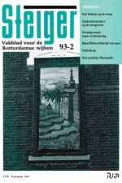
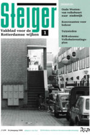
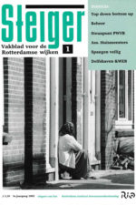
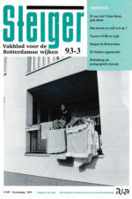
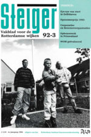
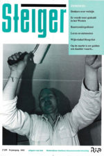
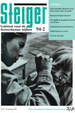
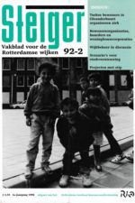
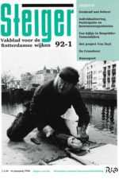

Steiger, vakblad voor de Rotterdamse wijken, verschijnt in de periode 1989-1995 met discussies en reportages over wijkinitiatieven, bewonersorganisaties en gemeentelijk beleid. Het blad is een uitgave van het Rotterdams instituut bewonersondersteuning Rio.
[Alle groen gemarkeerde items kunt u downloaden.Een overzicht van alle te downloaden items vindt u hier.]
Een selectie van een aantal edities geeft een beeld van ontwikkelingen rond stadsvernieuwing en wijkbeheer, initiatieven voor werk in de wijk en het versterken van de positie van migranten. Sociale vernieuwing geeft een impuls aan samenlevingsopbouw en stelt ook bestaande praktijken van collectieve belangenbehartiging en bewonersondersteuning ter discussie.
Verslaggevers van Steiger gaan op bezoek bij een bewoner van het Slachthuisterrein die een vijver voor zijn huis graaft tegen hangjongeren (93-2), ze gaan naar de redactie van de beste wijkkrant, winnende straten van de Opzoomerprijs (93/3) en bezoeken Circus Kroon in de Tent van het Rotterdams Volkstheater. (89/0, 93/3)
Stadsvernieuwing
 Een centraal thema is de koerswijziging in de stadsvernieuwing. In de gemeentelijke nota ‘Vernieuwing van de stadsvernieuwing’ wordt het principe van bouwen voor de buurt, met 100% sociale huurwoningen, losgelaten. ‘Toegegeven’, luidt het commentaar (89/0), ‘dit uitgangspunt leidde misschien wel eens tot verstarring; bewoners die graag een goedkope koopwoning zouden willen waren verplicht hun heil elders te zoeken en het beperkte aantal inwoners met een zo hoog inkomen dat ze geen recht hebben op een woningwetwoning waren aangewezen op het centrum of de buitenwijken’. Kritiek is dat in de nota wordt voorbijgegaan aan de stijgende woonlasten waardoor nieuwbouw en ook hoogniveau renovatie onbetaalbaar worden voor een steeds grotere groep bewoners. Ook de zeggenschap van bewonersorganisaties is een witte vlek. De projectgroepen stadsvernieuwing staan op losse schroeven en de gemeente trekt zich terug ten gunste van woningcorporaties. Conclusie is dat veel huiswerk is te doen voor bewonersorganisaties en bewonersondersteuners: voor wie bouw je, help je met de woningen die je bouwt ook de laagste inkomensgroepen, hoe moet je je opstellen tegenover koopwoningen en duurdere huurwoningen, is de huidige organisatievorm van de (wijkgerichte) bewonersorganisatie nog wel de meest geschikte?
Een centraal thema is de koerswijziging in de stadsvernieuwing. In de gemeentelijke nota ‘Vernieuwing van de stadsvernieuwing’ wordt het principe van bouwen voor de buurt, met 100% sociale huurwoningen, losgelaten. ‘Toegegeven’, luidt het commentaar (89/0), ‘dit uitgangspunt leidde misschien wel eens tot verstarring; bewoners die graag een goedkope koopwoning zouden willen waren verplicht hun heil elders te zoeken en het beperkte aantal inwoners met een zo hoog inkomen dat ze geen recht hebben op een woningwetwoning waren aangewezen op het centrum of de buitenwijken’. Kritiek is dat in de nota wordt voorbijgegaan aan de stijgende woonlasten waardoor nieuwbouw en ook hoogniveau renovatie onbetaalbaar worden voor een steeds grotere groep bewoners. Ook de zeggenschap van bewonersorganisaties is een witte vlek. De projectgroepen stadsvernieuwing staan op losse schroeven en de gemeente trekt zich terug ten gunste van woningcorporaties. Conclusie is dat veel huiswerk is te doen voor bewonersorganisaties en bewonersondersteuners: voor wie bouw je, help je met de woningen die je bouwt ook de laagste inkomensgroepen, hoe moet je je opstellen tegenover koopwoningen en duurdere huurwoningen, is de huidige organisatievorm van de (wijkgerichte) bewonersorganisatie nog wel de meest geschikte?
Bewonersorganisaties en woningcorporaties verkennen de mogelijkheden om zaken met elkaar te doen bij de organisatie van huurders, bij een huurbeleid met hogere huren voor woningen met uitzicht op de Maas (‘huurdifferentiatie’), investeringen in woningonderhoud en sociaal beheer. Financiert de corporatie het gebouwtje van de speeltuinvereniging? Namens welke groepen bewoners willen (en kunnen) bewonersorganisaties spreken? Is het Wijk Overleg Beheer WOB, gezien als opvolger van de projectgroep stadsvernieuwing, de plek om afspraken te maken en invloed van bewoners te organiseren? (91/1, 92/2) En: maken directeuren van corporaties de dienst uit bij de vernieuwing van naoorlogse wijken in Overschie en Hoogvliet, met eigen overlegcircuits met ‘hun huurders’?
Bezuinigingen op het stadsvernieuwingsfonds leiden tot uitstel van plannen in buurten met een sloopetiket. ‘St. Juttemisetiketten’ leiden tot verpaupering en concentraties van bewoners die zijn aangewezen op goedkope woningen. Ook veel migranten komen terecht in onverbeterde delen van de woningvoorraad, in het Oude Noorden, Bospolder, Hillesluis, Afrikaanderwijk, Bloemhof.
Onderzoek in de Oleanderbuurt bevestigt dat er weinig belangstelling bestaat bij veel migranten van de eerste generatie voor stadsvernieuwing, ze leven vaak met een verwachting van terugkeer en sparen voor een huis in Turkije of Marokko. Het projectbureau start de discussie over renovatie of sloop/nieuwbouw van de buurt met de provocerende stelling: ‘we maken de mooiste Turkenwijk van Europa’. Gekozen wordt voor de bouw van een nieuwe heterogene Oleanderbuurt. (90/1) Verhuisbewegingen verscherpen tegenstellingen tussen groepen oorspronkelijke bewoners en migranten in de aangrenzende Bloemhofpleinbuurt. (91/1) Overleg met de woningstichting moet leiden tot het toegankelijk maken van Vreewijk voor stadvernieuwingsurgenten van Turkse komaf uit Bloemhof. Bewonersorganisaties in stadsvernieuwingswijken pleiten ervoor dat ook naoorlogse wijken zich openstellen voor migranten. Woningmarkt Zuid in beweging. (93/1)
In Rotterdam West worden nieuwe plannen gemaakt om de bezuinigingen op het stadsvernieuwingsfonds op te vangen. Beoogd wordt van de nood een deugd te maken door investeringen uit te lokken van private partijen, in combinatie met onderhoudsprogramma’s en intensief beheer van de woonomgeving door de gemeente. Bewonersorganisatie en projectbureau van het Nieuwe Westen sluiten de ‘New Deal West’ en kiezen ervoor om de nog beschikbare middelen voor stadsvernieuwing in te zetten in buurten die kampen met verpaupering en drugsoverlast, terwijl in andere buurten de aanpak beperkt wordt tot onderhoud en beheer of tot particuliere investeringen. (93/1, 93/3)
Het stadsvernieuwingsprogramma wordt uitgebreid met particuliere woningverbetering. (91/1, 92/3) De voorzitter van de Werkgroep Oud Charlois, zelf eigenaar-bewoner, ijvert voor de bouw van premiekoopwoningen in het nieuwe centrum van de wijk. Ook in Kralingen wordt een kopersvereniging opgericht (93/2). De woongroepenwinkel ondersteunt initiatieven voor collectief wonen. (93/3)
Een aantal wijken kampt met drugsoverlast. De bewonersorganisatie Middelland demonstreert tegen de tippelzone op de G.J.de Jonghweg en de drugsoverlast in de buurt. (89/0, 93/2) Naast politie-inzet wordt gepleit voor gecontroleerde drugsvoorziening en betere opvang van verslaafden. Devies van een preventieproject in Spangen is: iedere wijk zijn eigen vaste groep junks. (93/3)
 De Wijkontwikkelingsmaatschappij WOM stimuleert de aanpak van harde horeca en het upgraden van winkelstraten (Witte de Withstraat is voorbeeld). (89/0) Een leegstaande garage van het GEB in Cool wordt gekraakt, het wordt een bedrijfsverzamelgebouw van werkprojecten met een autosleutelwerkplaats, een drukkerij en een Turks-Nederlandse sociëteit. Vrijwilligersbedrijf Groene Vingers onderhoudt tuinen voor ouderen in Vreewijk. De Stichting Werk in Charlois is voortrekker bij het creëren van werk in toezicht en onderhoud via de banenpool. (89/3, 92/1, 94/2)
De Wijkontwikkelingsmaatschappij WOM stimuleert de aanpak van harde horeca en het upgraden van winkelstraten (Witte de Withstraat is voorbeeld). (89/0) Een leegstaande garage van het GEB in Cool wordt gekraakt, het wordt een bedrijfsverzamelgebouw van werkprojecten met een autosleutelwerkplaats, een drukkerij en een Turks-Nederlandse sociëteit. Vrijwilligersbedrijf Groene Vingers onderhoudt tuinen voor ouderen in Vreewijk. De Stichting Werk in Charlois is voortrekker bij het creëren van werk in toezicht en onderhoud via de banenpool. (89/3, 92/1, 94/2)
Bewonersorganisatie Feijenoord wil dat de ontwikkeling van het vrijkomende haventerreinen Binnenhaven Spoorweghaven en Wilhelminapier met duurdere woningen en kantoren ook ten goede komt aan de omliggende stadsvernieuwingswijken. Ze komen met een plan voor een ontwikkelingscentrum op een ponton. Het moet dienen als projectbureau en als buurtvoorziening. Met het voorstel willen we een voet tussen de deur krijgen, zegt de opbouwwerker, de ontwikkeling van de Kop van Zuid kan helpen om Feijenoord uit het isolement te halen, met een tram over de nieuwe brug, dwarsverbindingen tussen Feijenoord en Afrikaanderwijk, en wie weet komt de middelbare school terug in het gebied. (89/0, 93/3) Via werkconferenties met betrokken partijen worden afspraken gemaakt over deelname van bewonersorganisaties in de publiek-private samenwerking voor het project en een programma voor ‘wederzijds profijt’. (89/3) Het blijkt niet te lukken om werklozen uit Feijenoord, Afrikaanderwijk en Katendrecht aan het werk te helpen in de bouw, de bouwbedrijven brengen hun eigen personeel mee, vaak van buiten Rotterdam. Een sociaal statuut voor investeerders past niet in het programma voor Het Nieuwe Rotterdam, dat ruim baan wil maken voor bedrijven. De voorzitter van de ontwikkelingsraad Rotor constateert dat de koppeling van sociale ontwikkeling met economische vernieuwing achterblijft.
Volksbuurt en stadswijk
De volksbuurt van weleer is niet teruggekomen met het bouwen voor de buurt, concludeert een onderzoek, twintig jaar na de start van de stadsvernieuwing in het Oude Westen. (90/1) Er is vooral gebouwd voor groepen die in de jaren 1970 in de wijk woonden. In het Oude Westen is zo een heterogene stadswijk ontstaan, met ‘blijvers’, ‘nieuwe stedelingen’ met meer opleiding en verschillende groepen Mediterranen en Surinamers. Mensen met uiteenlopende achtergrond bevolken de portieken maar hebben onderling beperkt contact, hun sociale netwerken verschillen en zijn meestal niet wijkgebonden. Toch zijn bewoners wel ‘vertrouwd met elkaar’, aldus de onderzoekers, die anders dan in andere wijken weinig gekanker aantreffen. Ze spreken van ‘afstandelijke gewenning’. Het onderzoek weerspreekt het beeld van stadsvernieuwingswijken als getto’s met alleen mensen met lagere inkomens, maar de heterogene stadswijk is ook kwetsbaar. Er kan geen beroep worden gedaan op ‘de bewoners’ voor het beheer van de openbare ruimtes, daarvoor bestaat onvoldoende gemeenschappelijkheid. In een stadswijk moeten professionele beheerders het voortouw nemen bij het schoonhouden van de portieken en toezicht op de pleinen.
Huismeesters en assistent-huismeesters via de banenpool zijn een voorbeeld. (91/1) In Crooswijk neemt een voorman van de woonlastenstrijd het initiatief voor een wijkschoonmaakbedrijf.
Het koppelen van wijkbeheer met samenlevingsopbouw, waarbij eigen initiatief van bewoners centraal staat en het ontwikkelen van sociale netwerken, staat ter discussie. (92/1, 92/2). Wat is de verantwoordelijkheid van bewoners en van de corporatie bij het schoonhouden van de trappenhuizen? Bewoners die initiatief willen nemen krijgen een steuntje in de rug van het opbouwwerk bij het maken van afspraken met de buren via portiekgesprekken.
Acties voor een veilige buurt kunnen tegenstellingen aanwakkeren tussen groepen bewoners. De inzet van ‘straatcontactpersonen’ roept discussie op, ze signaleren kapotte lantaarnpalen en onveilige situaties, en ook verdachte personen? (92/3)
De omslag naar buurtbeheer in het Oude Westen gaat gepaard met andere manieren van communiceren en organiseren. Oudgedienden klagen dat er zo weinig Aktiegroepvergaderingen meer zijn. Een van de nieuwe ontmoetingsplekken wordt een tennisbaan die door bewoners wordt aangelegd op een binnenterrein na de sloop van een oud schoolgebouw.
Er wordt nog een nieuwe vinding gedaan. ‘Stel je een kleine snoepwinkel voor op een plein, je kunt er een voetbal en een fietsje krijgen, en er wordt een oogje op het plein gehouden.’ Het winkeltje krijgt de naam ‘Duimdrop’. (93/2, 93/3) Het is een nieuwe stap in de zoektocht naar ‘een thuis op straat’ met een prettig, uitdagend en open klimaat, dat georganiseerd wordt met activiteiten op pleinen en het aanleren van gedragsregels.
Bewonersorganisaties beschikken voor het weerbarstige terrein van ‘wijkbeheer’ over nieuwe deskundigheid. De vroegere sociaal begeleiders die zorg droegen voor herhuisvesting worden opgevolgd door deskundigen beheer, nieuwe gezichten in de wijk. (91/1)
Een werkgroep van enkele deelraadsvoorzitters en ambtenaren onder leiding van de projectleider Sociale vernieuwing zet een nieuwe koers uit voor het welzijnswerk in de wijk. De nieuwe ‘flexibele welzijnsorganisatie’ die de denktank voor ogen staat kent, anders dan de buurthuizen, een scheiding tussen werkers en gebouwen, de ‘verzamelde welzijnswerkers’ werken met projectopdrachten en tijdelijke subsidies en de activiteiten in de multifunctionele gebouwen worden aangeboden tegen een kostendekkend tarief, waarbij de RotterdamPas moet zorgen dat iedereen kan meedoen.
Hoofdtaken van de welzijnswerkers zijn het bevorderen van sociale contacten (o.m. met kleinschalige ontmoetingsruimtes), het beheersbaar houden van sociale spanningen, opvoedingsondersteuning en opvang van werklozen die geen kans meer hebben op de arbeidsmarkt. De voorstellen stuiten op felle kritiek van sociaal-cultureel werkers. Ze onderschrijven de doelstellingen, maar missen een visie op de rol van beroepskrachten bij het bevorderen van sociaal contact. Ze houden de denktank voor dat kleinschalige ontmoetingsruimten niet alleen leiden tot sociaal contact maar ook tot ruzie en afzondering. Niet ontmoetingsplekken maar gezamenlijke activiteiten leiden tot constructief sociaal contact, constateert een opbouwwerker. Kritiek is ook dat de denktank te weinig oog heeft voor een kernfunctie van buurthuizen: het bieden van aandacht en zorg voor mensen in de marge. (93/1)
Opzoomerdag, bij de afsluiting van het project Sociale vernieuwing, wordt een uniek evenement met manifestaties op 30 pleinen, georganiseerd door nieuwe samenwerkingsverbanden in wijken van opbouwwerkers, jongerenteams, wijkagent, buurthuizen, verenigingen, instellingen en gemeentelijke diensten. (93/2, 94/2)
Ella ter Kuile, VVD-fractievoorzitter die op de fiets de wijken doorkruist, is blij en een beetje trots op het resultaat van sociale vernieuwing. Ze ziet een schone taak voor opbouwwerkers.
Bewonersorganisatie
De inzet bewonersondersteuners verschuift van belangenbehartiging via overlegtafels naar initiatieven op straat- en complexniveau. Doel wordt om samen met direct betrokken bewoners de woon- en leefsituatie te verbeteren, onderlinge contacten tussen mensen met verschillende achtergrond te versterken en tegenwicht te bieden aan onvrede die zich uit in een stem voor Janmaat.
Eerder kwamen bewonersondersteuners tot de conclusie dat de uitvoeringspraktijk van de stadsvernieuwing weinig aanknopingspunten meer biedt voor participatie en organisatie van bewoners. Het is inmiddels een geoliede machine, het wiel voor goed en goedkoop bouwen hoeft niet meer samen met bewoners per project te worden uitgevonden en uitgevochten.
Bewonersondersteuners zijn gaan fungeren als zaakwaarnemer van bewonersbelangen. Strijd over budgetten en programma’s vindt plaats op stedelijk niveau waar bewonersorganisaties samenwerken in het Rotterdams Overleg Bewonersorganisaties ROB. Het ROB voert actie tegen de liberalisatie van het volkshuisvestingsbeleid (‘Heerma…zo niet!’), zet zich in voor een woonlastenfonds en organiseert huurinhoudingsacties.
Kunnen bewonersorganisaties belangen behartigen van uiteenlopende groepen, van oorspronkelijke bewoners en van immigranten, huurders en eigenaar-bewoners? Discussies over overlast door ‘buitenlanders’ en aantallen grote woningen in stadsvernieuwingsplannen lopen hoog op in bewonersorganisaties. In Bospolder Tussendijken sluit de bewonersorganisatie samenwerkingsovereenkomsten af met de Turkse werkgroep en Marokkaanse oudervereniging die zelf budgetten en werkruimtes krijgen om zo een eigen geluid te kunnen laten horen. (89/3)
Bewonersorganisaties van Bloemhof en Hillesluis poolen middelen voor migrantenwerk in een apart project FILIZ om beter in contact te kunnen komen met Turkse bewoners, mannen en vrouwen. (92/2)
De structuur van de bewonersorganisaties verandert in veel wijken. Een organisatie met centrale sturing die kan optreden namens de wijk ontwikkelt zich tot een los samenwerkingsverband van uiteenlopende groepen die gebruik maken van faciliteiten en ondersteuning van opbouwwerk en bewonersondersteuning. Het Rio ondersteunt deze ontwikkeling als inzet voor sociale vernieuwing en propageert een ‘netwerkorganisatie’. Het veranderingsproces is omstreden en verloopt met horten en stoten. De projectleider Sociale Vernieuwing gooit een knuppel in het hoenderhok met het voorstel voor een professioneel steunpunt in de wijk, los van de bewonersorganisatie, waar allerlei initiatiefnemers, ‘straatgroepen, huurdersverenigingen, bewonersorganisaties, actiegroepen, vrouwenplatforms en ouderenplatforms’, een beroep op kunnen doen. In een reactie bepleit de voorzitter van de bewonersorganisatie Provenierswijk, tevens voorzitter van een ouderenorganisatie, dat bewonersorganisaties zich ontwikkelen tot zo’n steunpunt. Hij benadrukt het belang van het bundelen van allerlei actieve krachten, het organiseren van ‘samenhang en samenklank’ in de wijk, en het schakelen tussen opkomende initiatieven en (deelgemeente)bestuur. (92/1)
In Prinsenland en het Oude Noorden vormen bewonersondersteuners een bewonerssteunpunt dat diensten wil verlenen aan bewonersgroepen en bewonersorganisatie. (92/3, 93/2)
Met het maken van wijkanalyses zetten bewonersorganisaties een nieuwe koers uit. De bewonersorganisatie Bospolder Tussendijken organiseert een serie themabijeenkomsten met groepen bewoners, instellingen en scholen over de ontwikkelingen in verpauperde buurten, over veilige speelplaatsen voor kinderen en onderwijs. Er is ook een bijeenkomst met ‘positivo’s’, bewoners die er voor kiezen om in de wijk te blijven wonen. Ondanks het afhaken van groepen bewoners blijkt de organisatie, samen met instellingen, te beschikken over een sterk wijknetwerk, concludeert de voorzitter van de bewonersorganisatie. (92/1) Ook de Aktiegroep Het Nieuwe Westen verzet de bakens. Anders dan bij stadsvernieuwing komt bij beheer het initiatief uit de buurt, zeggen de opbouwwerkers, de mensen houden zelf de verlichting in de gaten, de preventiemonteur die lichtbolletjes aanbrengt heeft zijn handel vol. Ze spreken ook van ‘wankele evenwichten’ gezien de toename van drugsoverlast en criminaliteit. (93/2)
Op de nieuwjaarsreceptie van het Rio in januari 1994 houdt de wethouder van Volkshuisvesting en sociale vernieuwing een toespraak waarin hij een profiel schetst van de toekomst-vaste opbouwwerker, het is ‘een schaap met vijftien poten’. Een greep uit het lijstje: opbouwwerkers ‘stimuleren actie i.p.v. reactie’, ze ‘discrimineren niet’ (een verwijzing naar discussies over spreiding van migranten), en: opbouwwerkers ‘kunnen zowel procesmatig als projectmatig werken’.
Hergroepering
De discussies in Steiger weerspiegelen de sociale strijd en de grote maatschappelijke veranderingen in de jaren 1980 en 1990, met het terugtrekken van de overheid uit de volkshuisvesting, bezuinigingen op collectieve voorzieningen, de toegenomen diversiteit van de bevolking en spanningen tussen verschillende groepen.
De sociale verbanden in wijken veranderen. In de jaren 1970 en 1980 vormen de bewonersorganisatie en het buurthuis centrale elementen in de sociale infrastructuur. In de loop van de jaren 1980 brokkelt het draagvlak van deze instituties af. Buurthuizen krijgen grote bezuinigingen te verwerken. Veel immigranten organiseren zich rond moskeeën. Bewonersorganisaties verliezen hun centrale positie in de wijk met het wegvallen van het programma voor bouwen voor de buurt, de toename van tegenstellingen en de grotere diversiteit van bewonersinitiatieven. Sociale vernieuwing draagt begin jaren 1990 bij aan hergroepering binnen het sociale bestel. In het programma staat een in aanleg zelfredzame en zichzelf organiserende bewoner centraal, met een steunpunt in de wijk waar zelforganisaties kunnen aankloppen en een multifunctionele welzijnsaccommodatie. Het welzijnswerk wordt georganiseerd via projecten onder de regie van deelgemeentes, waarbij het werk meer vatbaar wordt voor beleid en politiek. Het opbouwwerk maakt de banden met de bewonersorganisatie losser en gaat zich positioneren zich in de rol van derde in het krachtenveld van bewoners en instituties. Een onafhankelijke positie is geen gegeven, de opbouwwerker moet een plaats vinden binnen de nieuwe projectmatige verbanden die in wijken worden gecreëerd.
december 2016